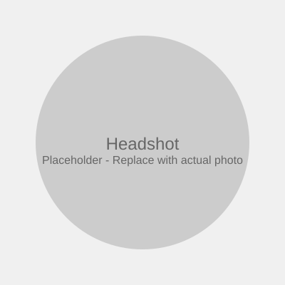

Seeking Junior Data Analyst Role
Sagi Simhi
Economics & Computer Science Student
Leveraging operational excellence and analytical training to transform data into clear business decisions. Proven ability to monitor complex systems, detect anomalies, and deliver actionable insights under pressure.
About Me
I'm currently pursuing a B.A. in Economics and Computer Science (Systems and Applications track) at the Open University of Israel. This unique combination provides the business acumen and technical skills essential for modern data analysis roles.
As a Shift Supervisor and Control Room Analyst at Teva Pharmaceuticals, I monitor complex operational systems, detect anomalies in real-time data streams, and translate findings into structured reports that drive operational decisions. This experience is complemented by international operations work in France, leadership roles at Israel Railways, and service in an elite reconnaissance unit where I developed exceptional ability to process information under pressure.
I am actively building my data analysis toolkit with hands-on practice in SQL, Excel, Tableau, and Python. My goal is to apply my operational expertise and analytical training to help organizations make confident, data-driven decisions.
Education
B.A. Economics and Computer Science
Open University of Israel
2025 - Expected 2028
Systems and Applications Track
Completed Coursework
- Statistics A
- Statistics B
- Differential Calculus for Economics and Management Students
- Organizational Behavior (Micro)
- Organizational Behavior (Macro)
- Introduction to Microeconomics
In Progress
- Introduction to Macroeconomics
Planned Next
- Introduction to Computer Science and Programming in Java
Self-Directed Learning
- campusIL: First Steps in Computer Science and Programming in Python (Completed)
Skills & Tools
Actively developing proficiency in these core data analysis tools:
Data Analysis
- SQL - Building querying, joining, and data manipulation skills
- Microsoft Excel - Advanced functions, pivot tables, and data modeling
- Tableau - Creating interactive dashboards and visualizations
- Python - Data analysis with pandas and visualization libraries
Transferable Skills
- Systems Thinking - Holistic problem analysis from operational background
- Attention to Detail - Honed through security and control room operations
- Structured Decision-Making - Experience converting incomplete information into actionable conclusions
- Technical Communication - Translating complex findings for diverse stakeholders
Professional Experience
Shift Supervisor & Control Room Analyst
Teva Pharmaceuticals
September 2022 – Present
- Monitor concurrent operational systems and live information streams, identifying actionable signals from routine activity
- Document structured operational findings that support faster, clearer decisions by subsequent shifts
- Develop protocols for anomaly detection and escalation procedures
- Collaborate with cross-functional teams to resolve operational discrepancies
International Operations Manager
ETI Consulting Ltd. - Toulouse, France
August 2021 – July 2022
- Coordinated cross-border operational data across multiple stakeholders with different reporting formats
- Translated regulatory constraints into clear, trackable action plans for international operations
- Managed vendor relationships and service level agreements across jurisdictions
Shift Leader
Israel Railways Ltd.
August 2019 – August 2021
- Monitored safety and performance KPIs across high-volume rail environments
- Identified deviation patterns and escalated potential issues before incidents compounded
- Produced structured shift reports briefing management on operational conditions
Tactical Operator
Special Reconnaissance Unit (Sayeret), IDF
November 2016 – June 2019
- Processed multiple data streams under time pressure to identify critical patterns
- Presented structured assessments with confidence levels and recommendations
- Maintained operational readiness while adapting to rapidly changing situations
Projects
Projects currently in development. More case studies will be added as they progress.
Strategy 20-80
Institutional-style investment research presentation applying Pareto principle to portfolio optimization
Technical Analysis Lab
Quantitative signal sandbox for developing and testing trading indicators
Additional Projects
More projects showcasing SQL, Python, and data visualization skills will be added here